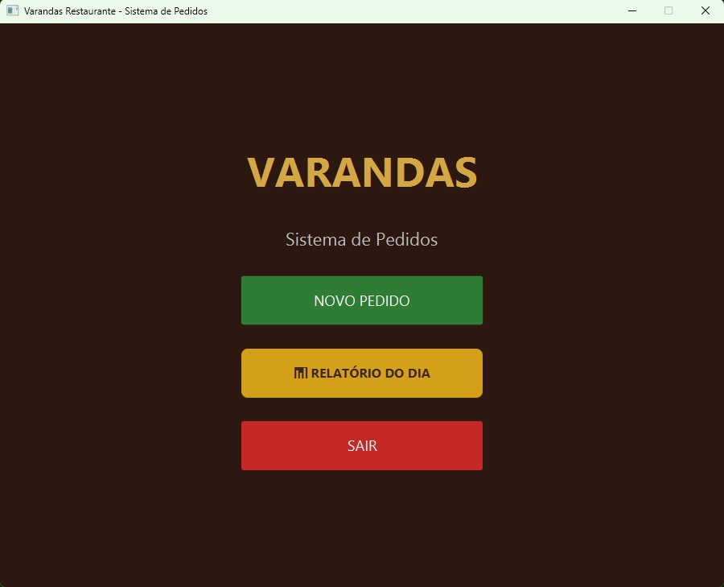
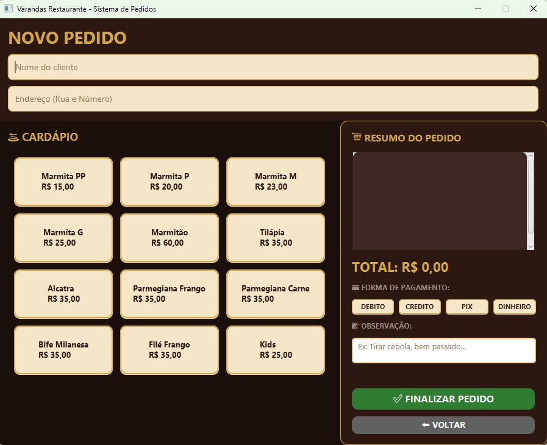
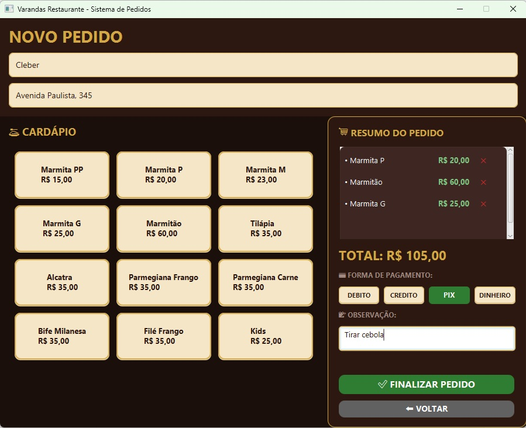
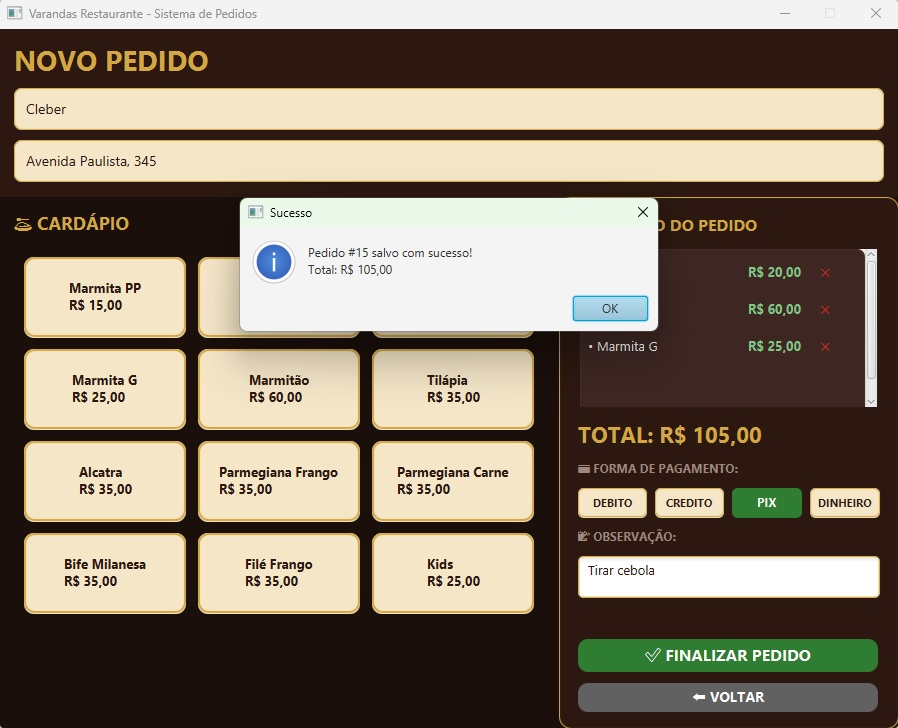
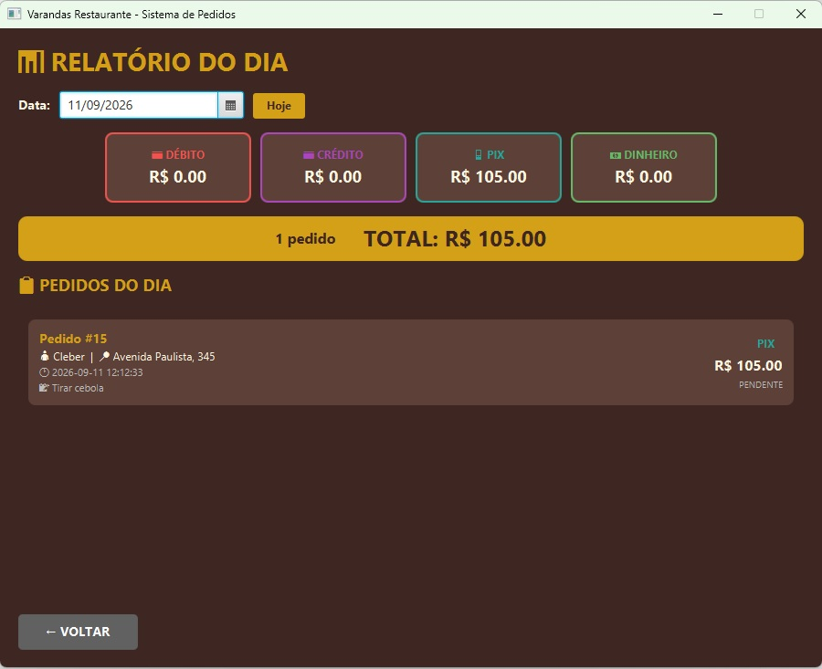

Sistema Varandas
Pronto — aguardando teste piloto
Capturas de tela





O problema
O Varandas, um restaurante de verdade, controlava pedidos, clientes e formas de pagamento no papel e em planilha solta — sem histórico organizado e sem um jeito rápido de emitir o comprovante do pedido pro cliente no balcão.
A solução
Um sistema desktop em Java com interface em JavaFX e persistência em SQLite. Cadastra e busca clientes, monta pedidos com os itens reais do cardápio do restaurante (marmitas em diferentes tamanhos, pratos feitos), registra a forma de pagamento, gera relatórios e imprime o comprovante direto na impressora térmica do balcão.
Decisões técnicas
Comecei simples — um menu interativo no terminal, com Scanner e
persistência em arquivo, só pra validar a lógica de cadastro de clientes e pedidos.
Depois de confirmar que a lógica de negócio fazia sentido, migrei a persistência
pra SQLite (com DAO separando acesso a dados da regra de negócio) e construí a
interface gráfica em JavaFX. A parte mais delicada foi a impressão térmica — enviar
os comandos ESC/POS certos pra impressora se comportar como num sistema de PDV
comercial. No fim, empacotei tudo com Maven Shade e jpackage num
instalador Windows com o runtime Java embutido, pensando em facilitar a instalação
pra quem não sabe o que é Java.
Status e aprendizados
O sistema está pronto e empacotado, mas ainda não passou por um teste real na cozinha do Varandas — esse é o próximo passo. Até aqui, os maiores aprendizados foram técnicos: integrar a impressora térmica via ESC/POS e empacotar tudo num instalador que qualquer pessoa consegue instalar sozinha, sem saber nada de Java. Isso me tirou da lógica pura de programação e me fez pensar em como um usuário não-técnico vai de fato usar isso no dia a dia — o teste real vai mostrar o quanto essa previsão se sustenta.